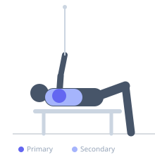

Exercise guide / Cable Rear Delt Fly
Cable Rear Delt Fly
The cable rear delt fly targets the posterior deltoid and upper back musculature by pulling a cable across the body in a horizontal abduction pattern. Using cables maintains tension throughout the full range of motion. This exercise is essential for shoulder health and postural balance, counteracting the forward shoulder position often caused by excessive pressing work.
Primary muscles
deltoid posterior
Secondary muscles
rhomboid major
rhomboid minor
trapezius middle
teres minor
Stabilizers
infraspinatus
Equipment
Cable Machine (Dual Pulley / Functional Trainer)
Optional
Cable Machine (High Pulley)


Starting position
- Stand between two cable stacks set at face height with handles crossed (right hand to left cable, left hand to right cable). Hold handles with palms facing down. Lean forward slightly at the hip or stand upright.
Setup
- Set both cable pulleys to face or upper-chest height. Cross the cables and grasp handles so each arm crosses to the opposite stack at the start.
Steps
- Step 1: Cross-grip the cable handles (right to left pulley, left to right pulley) with arms crossed in front at face height.
- Step 2: Begin with arms extended slightly in front and crossed, feeling tension in the cables.
- Step 3: Exhale and pull the handles outward and back in a wide arc, extending the arms to either side.
- Step 4: Squeeze the rear delts and rhomboids at the peak, then inhale and slowly return to the crossed start position.
Coaching cues
- Lead with your elbows behind you, not with your hands outward
- Feel the squeeze behind your shoulder at the end of each rep
Breathing
- Exhale as you pull outward; inhale on the return.
Range of motion
- Pull until the arms are fully spread to either side with the rear delts maximally contracted.
Tempo
- 2-1-2-0
Common mistakes
- Bending the elbows heavily during the movement, turning it into a row
- Using body momentum by rocking — keep the torso still
Safety
- Keep a consistent, slight elbow bend — do not lock out the arms
Training
- hypertrophy: 12–20 reps
- endurance: 15–25 reps
- hypertrophy: 3–4 sets
- endurance: 2–3 sets
- Rest: {'hypertrophy': 60, 'endurance': 45}